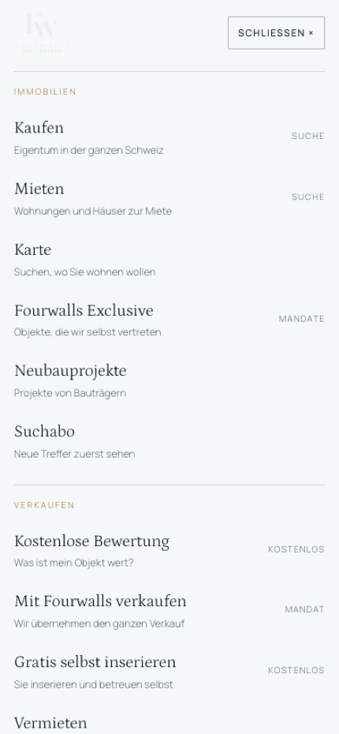
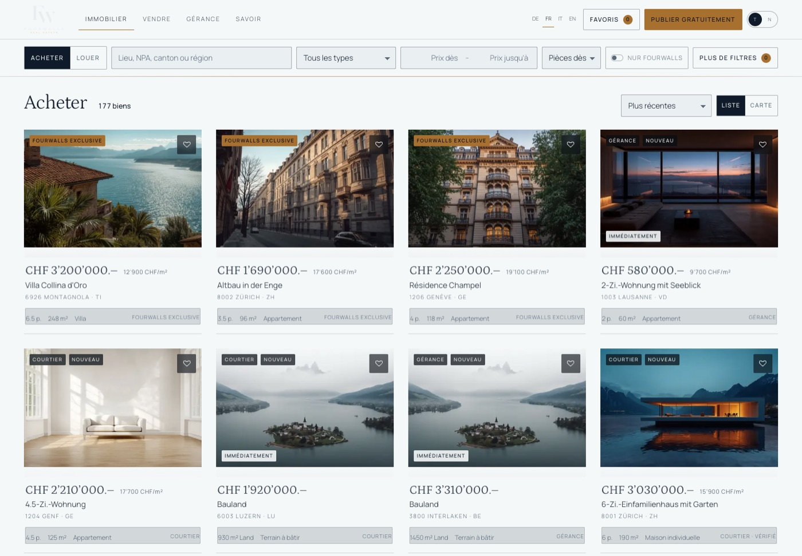
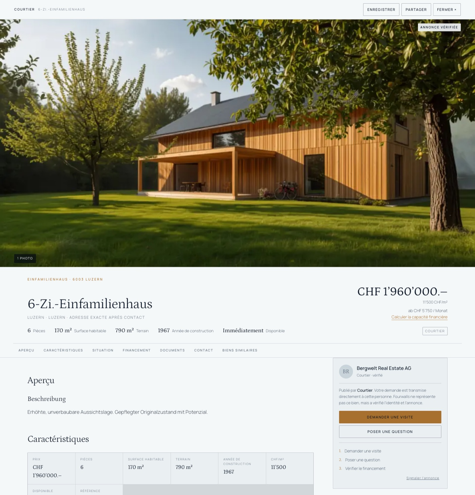
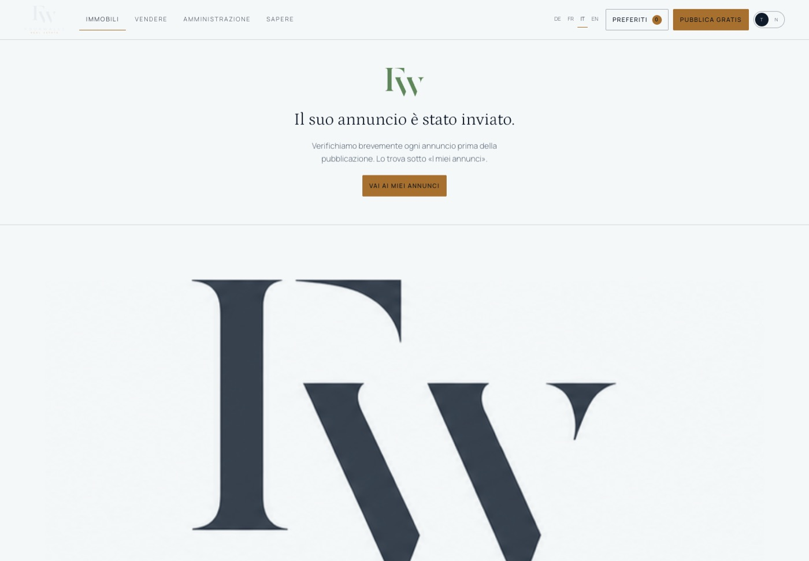
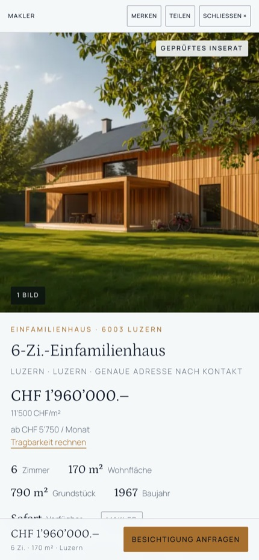
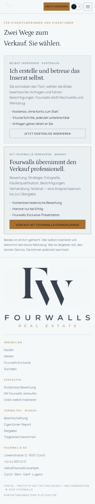

P1 hat die Objektseite gebaut. P2 den Bestand tragfähig gemacht. P3 die Geografie und die Karte real. P4 verbindet das zu einem einzigen Weg: Startseite, Suche, Karte, Objekt, Verkaufen, Verwalten, Inserieren, Konto — vier Sprachen, zwei Erscheinungen, ein Auftritt. Wer die Seite besucht, soll die Bauphasen nie bemerken.
Die Bestandsaufnahme zu Beginn ergab etwas Ungewöhnliches: Die Homepage, die Navigation, der Fusszeilen-Ökosystemplan, der Vier-Wege-Einstieg direkt unter dem Held, die Verkaufen- und Verwalten-Seiten mit Zehn-Etappen-Ablauf und ehrlich deklarierter Bewertung, der Inserate-Assistent mit Vorab-Erklärung — all das existierte bereits in der von P1 verlangten Qualität. P4 war darum kein Umbau, sondern eine gezielte Serie von Korrekturen an genau den Stellen, an denen aus vier eigenständigen Baustellen noch keine eine Marke geworden war:
company.js ist die einzige Quelle für Name, Adresse, Telefon, E-Mail und Standorte — Fusszeile, Objekt-Kontaktkarte und Organisation-Kennzeichnung lesen von dort, statt es an drei Stellen zu wiederholen.core.js, dazu die Objekttyp- und Merkmalslisten, die bisher nur auf Deutsch existierten.Die Reihenfolge entspricht dem im Auftrag empfohlenen Aufbau, war aber bereits vorhanden:
company.js.Geprüft und für gut befunden: keine zwölfteilige Symbolwand, kein SaaS-Dashboard-Gefühl. Die Seite bleibt architektonisch und redaktionell, wie es der Auftrag verlangt.
Jede der im Auftrag genannten Reisen wurde Schritt für Schritt im Browser durchgespielt, nicht nur gelesen:
| Reise | Geprüft |
|---|---|
| Startseite → Suche → Filter → Karte → Objekt → Merken | ✓ durchgängig, ohne Bruch |
| Startseite → Gratis inserieren → 9-Schritt-Assistent → Bestätigung | ✓ in allen vier Sprachen bis zum Ende getestet |
| Startseite → Verkaufen → Bewertung anfordern | ✓ Formular, Bestätigungstext ohne Zeitversprechen |
| Startseite → Verwalten → Offerte anfordern | ✓ Formular, Bestätigungstext ohne Zeitversprechen |
| Suche → Kartenausschnitt → Objekt → Sprachwechsel mitten auf der Objektseite | ✓ Seite baut sich in der neuen Sprache neu auf, statt gemischt zu bleiben |
Vier Hauptgruppen mit Untermenüs — Immobilien (Kaufen, Mieten, Karte, Exclusive, Neubau, Suchabo), Verkaufen (Bewertung, Mit Fourwalls, Selbst inserieren, Vermieten), Verwalten (Bewirtschaftung, Report, Erstvermietung, Offerte), Wissen (Ratgeber, Tragbarkeit, Kaufnebenkosten, Markt) — existierten bereits und entsprechen der im Auftrag vorgeschlagenen Struktur nahezu wörtlich. Das mobile Menü ist nach denselben vier Gruppen sortiert, nicht eine einzige lange Liste.

P3 dokumentierte die Objektseite und den Inserate-Assistenten offen als deutschsprachige Lücke. Das war der grösste Einzelposten von P4:
| Bereich | Vorher | Jetzt |
|---|---|---|
| Objektseite (Abschnitte, Fakten, Finanzrechner, Kontaktkarte, Lagehinweise, Kompass, Lightbox) | Deutsch, fest codiert | 98 Textstellen über t(), alle vier Sprachen |
| Inserate-Assistent (9 Schritte, Validierung, Einstiegs- und Abschlussbildschirm) | Deutsch, fest codiert | Vollständig übersetzt, inklusive der Lage-Genauigkeitsstufen |
Objekttyp- und Merkmalslisten (FWL.typen, FEAT_DE) | Nur Deutsch, sitzten in Suchfiltern, Karten und Assistent | Sprachabhängige Funktionen typLabel() / featLabel(), eine Quelle für alle Verwendungen |
| Konto-Bereich (Merkliste, Suchabos, Anfragen, eigene Inserate, Leerzustände) | Teilweise fest codiert | Vollständig übersetzt |
Dossier-Ableitung (dossier.js: Zustand aus Baujahr, Standarddokumente) | Deutsche Werte unabhängig von der Spracheinstellung | Eigene L18-Tabelle, sprachabhängig |
Ein struktureller Fehler wurde dabei gefunden und behoben: Ein Sprachwechsel während die Objektseite offen war, aktualisierte bisher nur Navigation und Fusszeile — die Objektseite selbst blieb in der alten Sprache stehen. onLang baut die offene Objektseite jetzt aus dem aktuellen Hash neu auf.



Bewusste Grenze: Übersetzt wurde die Oberfläche — Beschriftungen, Kategorien, Hinweistexte, Validierungsmeldungen. Der von einer Person eingegebene Inseratstext (Titel, Beschreibung) bleibt in der Sprache, in der er geschrieben wurde. Das entspricht echten Marktplätzen: Ein französisches Inserat hat einen französischen Text, weil eine Person ihn so geschrieben hat, nicht weil die Oberfläche ihn automatisch übersetzt.
Die grosse Fliesstext-Seiten Verkaufen und Verwalten — der Zehn-Etappen-Ablauf, die FAQ, die Leistungsbeschreibungen — bleiben einsprachig Deutsch. Das ist eine Auslassung, keine Unmöglichkeit: Es handelt sich um mehrere tausend Wörter redaktioneller Verkaufstext, nicht um Bedienelemente. Eine maschinelle Übersetzung dieses Umfangs ohne Kontrolle durch eine Person, die den deutschen Text kennt, hätte das Risiko falscher Nuancen getragen — gerade bei einem Text, der Vertrauen schaffen soll. Das ist der grösste offene Punkt aus Abschnitt 46 des Auftrags und steht explizit in Abschnitt 9.
Vier vollständige Durchläufe bei 390 Pixeln geprüft, nicht nur einzelne Screenshots:
Ein echter Fehler wurde dabei gefunden und behoben (siehe Abschnitt 1) — das auf der Objektseite bei 390 px zu knapp sitzende Quellen-Abzeichen. Alles andere hielt: Formulare bedienbar, Buttons touch-gross, kein horizontales Scrollen, das mobile Menü gruppiert statt aufgeschüttet.


Eine vollständige Durchsuchung des Auftritts nach unbelegten Zahlen und Versprechen ergab genau eine wiederkehrende Kategorie: das «48 Stunden»-Versprechen für Bewertung und Offerte, an 19 Stellen über sechs Dateien (Startseite, Verkaufen, Verwalten, Assistent, Navigation, vier Sprachfassungen). Es wurde durchgehend entfernt oder durch ehrliche, nicht-numerische Formulierungen ersetzt («Kostenlose Bewertung», «Offerte anfordern») — nirgends durch eine andere, ebenso unbelegte Zahl.
Zusätzlich entfernt: die Mitgliedschaftsbehauptung «Mitglied SVIT Schweiz» in der Fusszeile (unbelegt) und die interne Turnier-Bezeichnung «Grand Final «Ufer»» aus dem öffentlichen Kleingedruckten (Design-Lab-Jargon, das in einem produktionsnahen Auftritt nichts zu suchen hat).
Was stehen blieb, weil es keine Zahlenbehauptung, sondern eine Verfahrensbeschreibung ist: der Zehn-Etappen-Ablauf auf der Verkaufen-Seite mit seinen Wochenmarkierungen («Woche 1», «Woche 2–6») — das ist ein typischer Projektplan, keine statistische Durchschnittsbehauptung, und wird im Auftrag selbst als zulässiges Muster genannt.
final/company.js ist jetzt die einzige Quelle für Name, Adresse, Telefon, E-Mail und Standorte. Fusszeile, Objekt-Kontaktkarte (Rückfalltelefonnummer) und die neue Organization-Kennzeichnung (siehe Abschnitt 10) lesen alle von dort — dieselbe Zahl kann nicht mehr an drei Stellen auseinanderlaufen. Die Datei ist als Demo-Platzhalter kommentiert und beschreibt, welche fünf Felder vor einer echten Produktion durch verifizierte Angaben ersetzt werden müssen (siehe Abschnitt 12).
rel="canonical" auf allen fünf statischen Seiten (Startseite, Suche, Verkaufen, Verwalten, Wissen).RealEstateAgent-Kennzeichnung (schema.org) auf der Startseite, gebaut aus company.js — keine zusätzliche Stelle, die veralten kann.RealEstateListing-Schema pro Objekt: Die Objektseite ist eine Hash-gesteuerte Überlagerung ohne eigene, für Suchmaschinen erreichbare URL. Das wäre erst mit serverseitig gerenderten Objektseiten ehrlich umsetzbar — vorher wäre es eine Behauptung ohne echte Grundlage.| Grösse | Wert |
|---|---|
Neue Übersetzungsschlüssel in core.js | ≈500 (4 Sprachen) |
| Geänderte Dateien | 11 + 1 neue (company.js) |
| Konsolenfehler über alle geprüften Seiten, Sprachen und Zustände | 0 |
| Wissen-Ratgeber: vorher / jetzt | 12 tote Verweise → 4 echte Beiträge |
| Wissen-Checklisten: vorher / jetzt | 3 tote PDF-Versprechen → 2 echte Listen (10 + 8 Punkte) |
Die in P3 gemessene Kartenleistung (9–25 ms Suche bei 50 000 Objekten, 4,6 s Kartenstart) wurde durch P4 nicht berührt — keine der Änderungen lag im Karten- oder Suchpfad.
Damit company.js von Platzhaltern zu echten Angaben wird, braucht es von Fourwalls:
| Feld | Aktuell (Platzhalter) | Gebraucht |
|---|---|---|
| Firmierung | Fourwalls AG | Die tatsächliche Rechtsform und Firmierung |
| Adresse | Löwenstrasse 12 · 8001 Zürich | Der tatsächliche Sitz |
| Telefon | +41 44 555 01 01 | Eine Nummer, die tatsächlich abgehoben wird |
| hallo@fourwalls.example | Ein Postfach, das tatsächlich gelesen wird | |
| Standorte | Zürich, Bern, Genf, Lugano | Bestätigung, welche Standorte es wirklich gibt |
Zusätzlich, bevor diese Behauptungen öffentlich stehen dürften: das tatsächliche Provisionsmodell beim Mandatsverkauf (Prozentsatz oder Spanne), die tatsächliche Mitgliedschaft oder Zertifizierung (falls vorhanden), und eine Entscheidung, ob und mit welcher echten Nummer WhatsApp angeboten werden soll.
Der Auftrag selbst benennt die Richtung, und die Bestandsaufnahme in P4 bestätigt sie: Produktionsreife, Backend, Authentifizierung, echte Daten. Konkret, ohne Reihenfolge vorzugeben:
RealEstateListing-Daten ehrlich möglich werden und die Seite überhaupt indexierbar ist.company.js einsetzen, sobald sie vorliegen — die Datei ist bereit dafür.Fourwalls · Phase 4 · alle Objektdaten sind fiktive Demo-Daten · Firmendaten sind Platzhalter, siehe Abschnitt 13